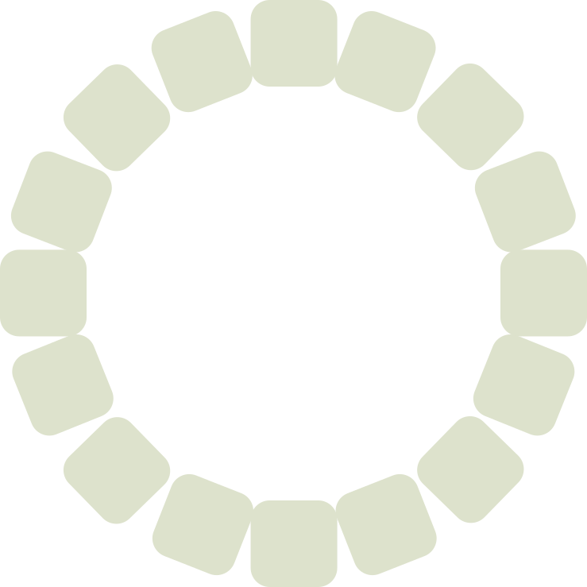
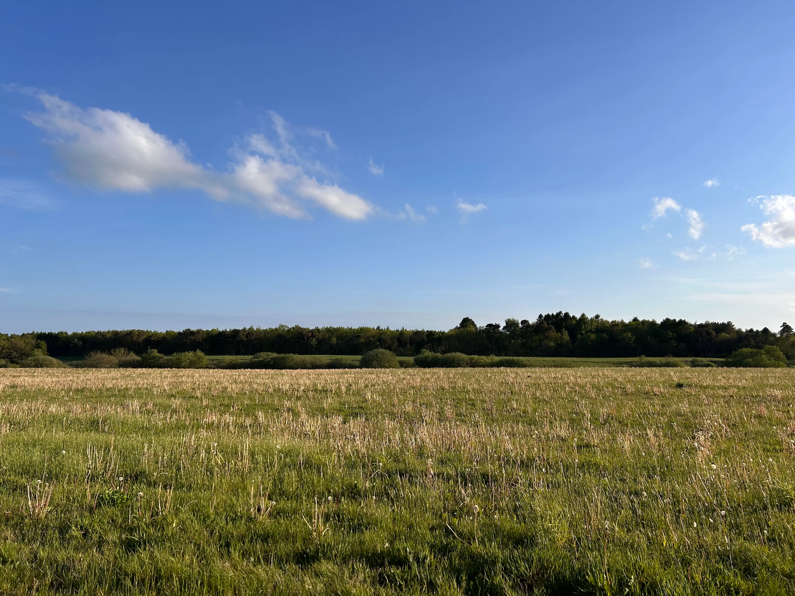
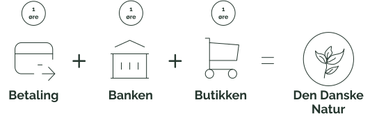
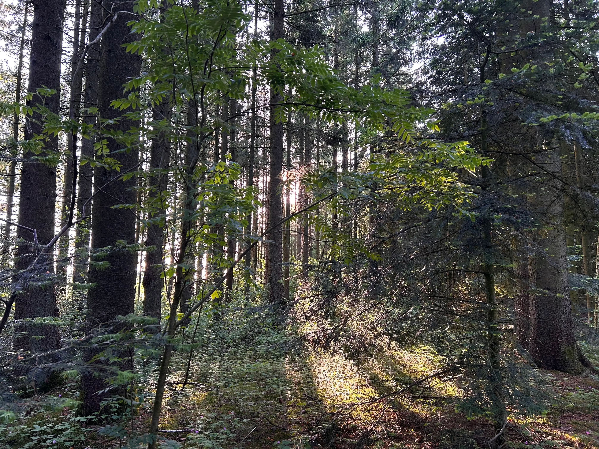
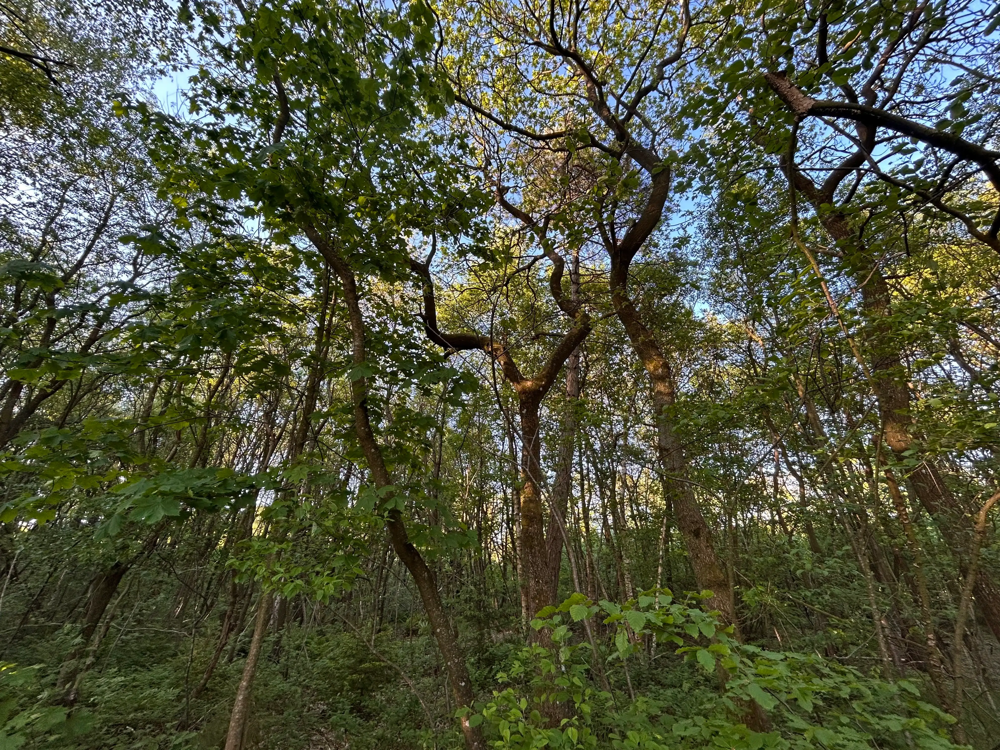

“En øre i brønden - et ønske for naturen”
Hver gang du bruger dit Dankort, donerer vi 1 øre til Den Danske Naturfond. Det bliver til mere end 10 millioner kroner hvert år, der går ubeskåret til opkøb og udvikling af mere vild og varig natur i Danmark. Vi kalder det Dankort Ønskebrønden.
Målet er ikke at forbruge mere, men at skabe mere plads til den danske natur.
Læs mereHvad er Dankort ønskebrønden?
Dankort Ønskebrønden er et initiativ iværksat af Dankort med formål om at styrke den danske vilde natur gennem pengedonationer til Den Danske Naturfond. Dankort, ejet af Nexi Group, donerer 1 øre pr. gennemført betaling med et Dankort til Den Danske Naturfond. Det betyder, at alle betalinger gennemført med et Dankort udløser et bidrag på 1 øre – både for køb foretaget i en fysisk butik/selvbetjeningsløsning eller i en webshop, og uanset om der betales med et fysisk Dankort eller et virtuelt Dankort i en wallet. Dankort donerer minimum 10 mio. kr. årligt til Den Danske Naturfond, uanset hvor mange betalinger der sker med Dankort. Udover Dankort, bidrager initiativets partnere med donationer til Den Danske Naturfond – ligeledes med 1 øre pr. gennemført Dankort transaktion.

Donationen går ud på

Hos os doneres der
- 1 øre når du bruger dit betalingskort
- 1 øre fra banken
- 1 øre fra samarbejdspartnere, som er udvalgte butikker.
Det er ikke dine penge, der doneres.
Det er Dankort, der donerer 1 øre pr. transaktion
til
Den
Danske
Naturfond. Det
samme gør de partnervirksomheder, der er med i samarbejdet.
Alle Dankorts pengebidrag til Naturfonden kommer fra Dankort selv, der er ejet af
Nets/Nexi.
Ønsker
du
som forbruger
selv at bidrage med donationer, kan dette ske via Naturfondens
hjemmeside: www.naturfonden.dk
Formålet med samarbejdspartnerne
Det betyder, at Dankort ønsker at styrke den danske natur og bidrage til den
kollektive
naturgenopretning i hele Danmark.
Til det formål er Den Danske Naturfond en velvalgt samarbejdspartner, da vores
bidrag
går
ubeskåret til at sikre mere blivende natur i hele Danmark – øre for øre.
Der findes mange vigtige formål, som vi kunne have valgt at støtte med Dankort
Øremærket. Vi
har
valgt,
at det skal være den danske natur, fordi naturen er noget alle i Danmark er fælles
om –
både
at
nyde
og
at passe på. Men
desværre ser vi, at den danske natur har det skidt og at dyr og planter forsvinder.
I samarbejde med Den Danske Naturfond kan vi gøre noget konkret for naturen i
Danmark,
så
både
nuværende
og kommende generationer kan nyde godt af den.


Du kan altid vælge den grønne transport
Hver gang du bruger dit Dankort, kan du nu opspare rabatter på todbilletter når du tager s-toget. For hver gang du bruger dankort bliver 0.5% af beløbet til en opsparing til at bruge på togbilletter. Endnu en måde du kan være med til at vælge det bæredygtige valg og passe bedre på vores natur!